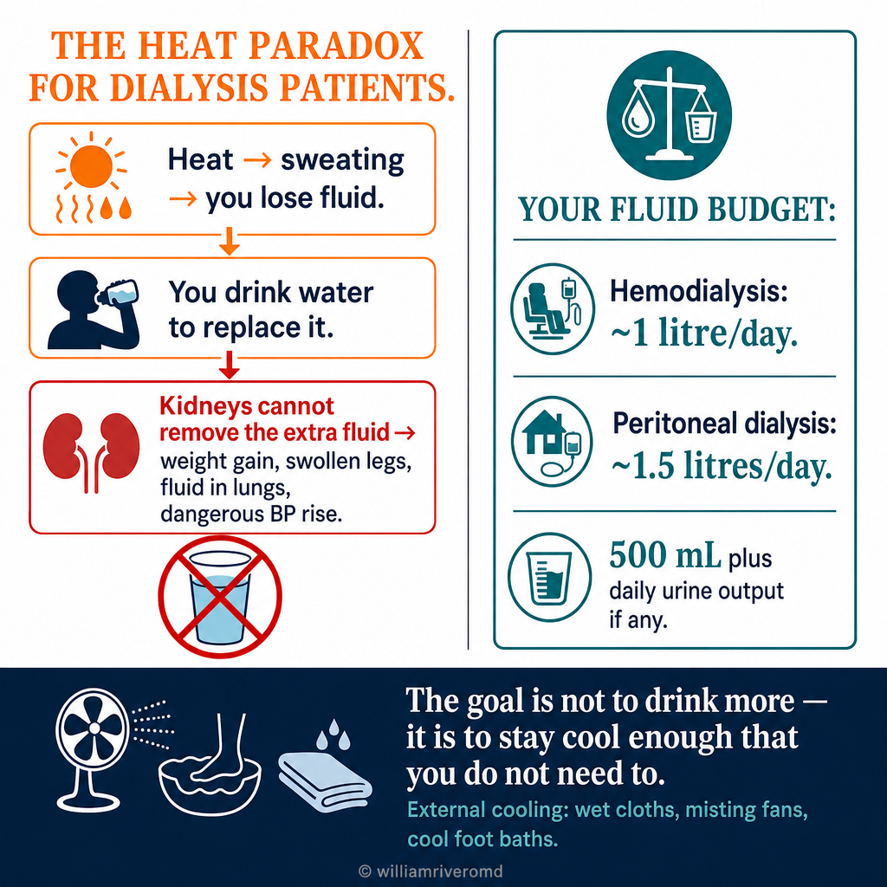
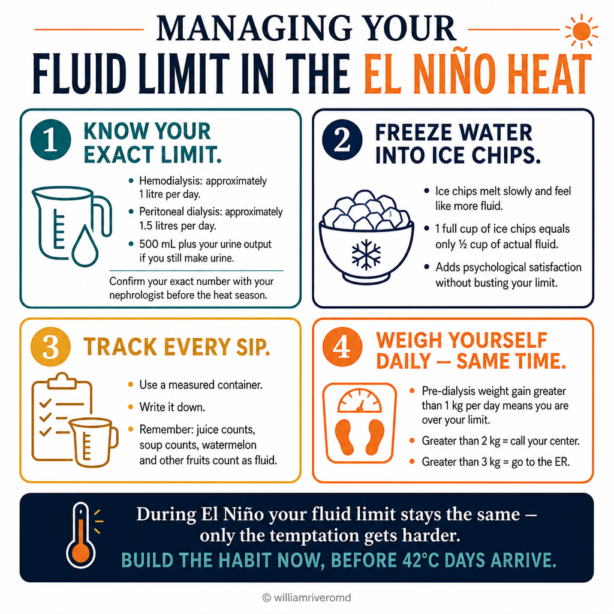
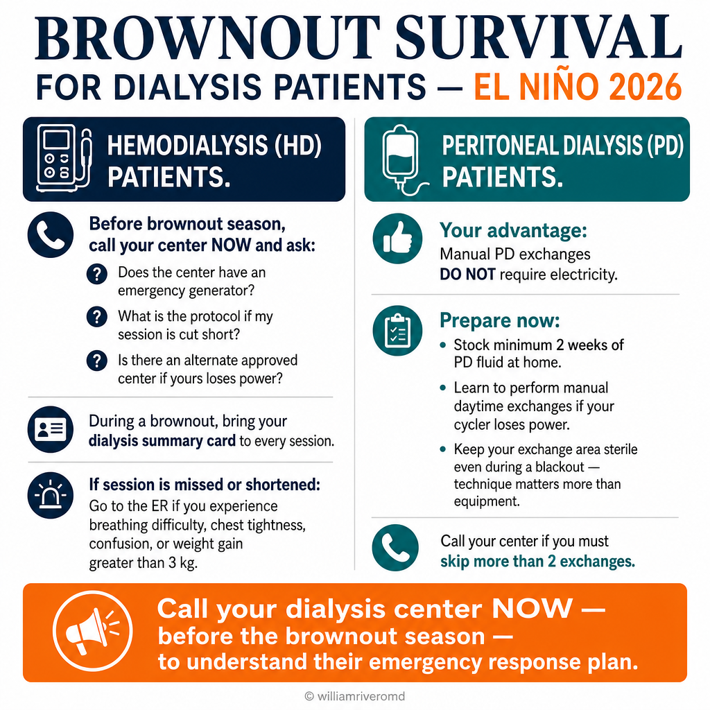

Why this guide exists — and why now. Bakit may gabay na ito — at bakit ngayon. Nganong naa kining giya — ug nganong karon.
On April 17, 2026, the Philippine Atmospheric, Geophysical and Astronomical Services Administration (PAGASA) issued an El Niño Watch with a 79% probability that El Niño conditions will develop in the Pacific by July–September 2026, with a meaningful chance of persistence into early 2027. For most Filipinos this means hotter days, drier crops, and a difficult few months. For dialysis patients it means something more dangerous. Noong Abril 17, 2026, naglabas ang PAGASA ng El Niño Watch na may 79% probabilidad na magkakaroon ng El Niño sa Pasipiko sa Hulyo–Setyembre 2026, at may posibilidad pang magpatuloy hanggang maagang bahagi ng 2027. Para sa karamihan ng Pilipino, ibig sabihin nito ay mas mainit na mga araw, mas tuyong tanim, at ilang mahihirap na buwan. Para sa mga pasyenteng nasa diyalisis, mas mapanganib ang ibig sabihin nito. Niadtong Abril 17, 2026, nagpagawas ang PAGASA og El Niño Watch nga adunay 79% nga posibilidad nga moabot ang El Niño sa Pasipiko sa Hulyo–Setyembre 2026, ug posible nga magpadayon hangtod sa sayong bahin sa 2027. Alang sa kadaghanan sa mga Pilipino, kini nagpasabot og mas init nga mga adlaw, mas uga nga mga tanom, ug pipila ka lisod nga bulan. Alang sa mga pasyente sa dialysis, mas peligroso ang gipasabot niini.
Three things will happen at once during El Niño 2026. First, daytime heat indices across Metro Manila, Cebu, and Davao will frequently exceed 42°C. Second, electricity demand for cooling will strain the grid, triggering rotating brownouts in major cities. Third, drought-related water rationing is expected in the National Capital Region and other water-stressed areas. Tatlong bagay ang sabay-sabay na mangyayari sa El Niño 2026. Una, ang heat index sa Metro Manila, Cebu, at Davao ay madalas lalampas sa 42°C. Pangalawa, ang pangangailangan ng kuryente para sa pampalamig ang magpapahirap sa grid, na magtutulak ng paikot na brownout sa malalaking lungsod. Pangatlo, asahan ang water rationing sa NCR at iba pang mga lugar na kulang sa tubig. Tulo ka butang ang dungan nga mahitabo sa El Niño 2026. Una, ang heat index sa Metro Manila, Cebu, ug Davao subsob nga molabaw sa 42°C. Ikaduha, ang panginahanglan sa kuryente para sa pampabugnaw ang maglisod sa grid, nga magpasugod sa magpuli-puli nga brownout sa dagkong syudad. Ikatulo, paabuton ang water rationing sa NCR ug uban pang mga lugar nga kulang sa tubig.
Each of these alone is manageable. Together, they create the most demanding 90 days a Filipino dialysis patient will face this year. The work to survive them needs to be done now, before June, while the equipment, the conversations, and the supply chains are still calm. Mag-isa, kakayanin ang bawat isa sa kanila. Pagsamasamahin, sila ang gagawa ng pinakamahirap na 90 araw na haharapin ng pasyenteng Pilipino sa diyalisis ngayong taon. Ang paghahanda para sa mga ito ay dapat gawin ngayon, bago ang Hunyo, habang kalmado pa ang mga gamit, ang mga usapan, at ang supply chain. Usa-usa, mahimo silang sagubangon. Pero sa dungan, sila mao ang molugway sa pinakalisod nga 90 ka adlaw nga atubangon sa Pilipinong pasyente sa dialysis karong tuiga. Ang pagpangandam alang niini kinahanglan buhaton karon, sa wala pa ang Hunyo, samtang kalmado pa ang mga ekipo, ang mga panagstorya, ug ang supply chain.

What follows is the practical playbook. It assumes you are an adult on hemodialysis or peritoneal dialysis, living anywhere in the Philippines, with whatever resources you have. Where the recommendations differ between HD and PD, both are spelled out. Where they differ between high-resource and low-resource settings, both are spelled out. Ang sumusunod ay ang praktikal na playbook. Inaasahan na ikaw ay nasa tamang gulang at nasa hemodialysis o peritoneal dialysis, naninirahan kahit saan sa Pilipinas, kung anumang rekurso ang mayroon ka. Kung iba ang rekomendasyon para sa HD at PD, parehong ipinaliliwanag. Kung iba para sa may sapat o kulang na rekurso, parehong ipinaliliwanag. Ang mosunod mao ang praktikal nga playbook. Gituohan nga ikaw usa ka hamtong nga anaa sa hemodialysis o peritoneal dialysis, nagpuyo bisan asa sa Pilipinas, sa unsa mang rekurso nga anaa kanimo. Kung lahi ang rekomendasyon alang sa HD ug PD, duha gipasabot. Kung lahi sa adunahan o kulang nga rekurso, duha gipasabot.
Why "drink more water" is dangerous advice for you. Bakit mapanganib para sa iyo ang payong "uminom ka pa ng tubig". Nganong peligroso alang kanimo ang tambag nga "uminom og daghang tubig".

Every public health message about heat tells healthy people to drink more water. For a dialysis patient, that advice can put you in the hospital — or kill you. Understanding why is the foundation of everything else in this guide. Lahat ng public health message tungkol sa init ay nagsasabi sa malulusog na tao na uminom ng mas maraming tubig. Para sa pasyenteng nasa diyalisis, ang payong iyon ay maaaring magdala sa iyo sa ospital — o makamatay. Ang pag-unawa kung bakit ay siyang pundasyon ng lahat ng iba pa sa gabay na ito. Tanang public health message bahin sa init nagaingon sa himsog nga mga tawo nga moinom og daghang tubig. Alang sa pasyente sa dialysis, kanang tambag mahimong modala kanimo sa ospital — o mopatay. Ang pagsabot kon nganong mao ang pundasyon sa tanan sa giya kini.
What heat does to a healthy person Ang ginagawa ng init sa malusog na tao Unsay gibuhat sa init sa himsog nga tawo
Sweat evaporates from the skin, cooling the body. The fluid lost through sweat is replaced by drinking. Functioning kidneys excrete excess fluid as urine to keep the volume right. Sumisingaw ang pawis mula sa balat, na nagpapalamig sa katawan. Ang likidong nawala sa pamamagitan ng pawis ay napapalitan sa pag-inom. Ang gumaganang mga bato ay naglalabas ng sobrang likido bilang ihi para mapanatiling tama ang dami. Mag-alisngaw ang singot gikan sa panit, nga nagpabugnaw sa lawas. Ang likido nga nawala sa singot mailisan pinaagi sa pag-inom. Ang naglihok nga mga kidney mogawas sa sobra nga likido isip ihi aron mapadayon ang husto nga gidaghanon.
What heat does to you Ang ginagawa ng init sa iyo Unsay gibuhat sa init kanimo
You still sweat — but most dialysis patients are anuric or oliguric. The fluid you take in to replace sweat losses cannot leave through urine. It accumulates between dialysis sessions and shows up as weight gain, swelling, and breathlessness. Pinapawisan ka pa rin — pero karamihan sa mga pasyente sa diyalisis ay hindi na umiihi o napakakaunti na lang ang ihi. Ang likidong iniinom mo para palitan ang pawis ay hindi makakalabas sa ihi. Naiipon ito sa pagitan ng mga sesyon ng diyalisis at lumalabas bilang pagtaas ng timbang, pamamaga, at hirap sa paghinga. Mosingot gihapon ka — apan kasagaran sa mga pasyente sa dialysis dili na o gamay na lang ang ihi. Ang likido nga imong giinom aron pulihan ang singot dili makagawas pinaagi sa ihi. Magtipun-og kini taliwala sa mga sesyon sa dialysis ug mogawas isip pagsaka sa timbang, pamanas, ug kalisod sa pagginhawa.
The result is a paradox Ang resulta ay isang paradox Ang sangputanan usa ka paradox
You are simultaneously thirsty (because of heat) and fluid-overloaded (because of how much you've already had to drink). Both feelings can be true at the same time. Following normal heat advice will worsen the second. Sabay kang nauuhaw (dahil sa init) at sobra ang likido sa katawan (dahil sa dami nang naiinom mo). Pareho silang totoo sa parehong oras. Ang pagsunod sa karaniwang payo tungkol sa init ay magpapalala sa pangalawa. Dungan kang giuhaw (tungod sa init) ug sobra'g likido sa lawas (tungod sa kadaghan na nimong giinom). Duha ka pagbati mahimong tinuod sa samang panahon. Ang pagsunod sa kasagarang tambag bahin sa init makapagrabe sa ikaduha.
The right answer is to cool the body without adding fluid Ang tamang sagot ay palamigin ang katawan nang hindi nagdadagdag ng likido Ang husto nga tubag mao ang pagpabugnaw sa lawas nga walay gidugang nga likido
The strategies in the next sections — managing thirst, cooling the skin, avoiding sun exposure — are designed to protect you from heat without requiring you to drink more than your dialysis budget allows. Ang mga estratehiya sa susunod na seksyon — pamamahala ng uhaw, pagpapalamig ng balat, pag-iwas sa araw — ay ginawa para protektahan ka mula sa init nang hindi hinihingi sa iyo na uminom nang labis sa pinapayagan ng iyong diyalisis. Ang mga estratehiya sa sunod nga mga seksyon — pagdumala sa kauhaw, pagpabugnaw sa panit, paglikay sa adlaw — gidisenyo aron panalipdan ka gikan sa init nga walay kinahanglan nga moinom og labaw pa sa gitugot sa imong dialysis budget.
Your daily fluid limit does not change just because it's hot Ang araw-araw na limitasyon mo sa likido ay hindi nababago dahil lang sa init Ang adlaw-adlaw nga limitasyon nimo sa likido dili mausab tungod lang sa init
For most hemodialysis patients, the limit is approximately 1 litre per day (or 500 mL plus your daily urine output if you still produce urine). For peritoneal dialysis patients, the budget is usually a little more generous — typically 1.5 litres per day, depending on your prescription. Confirm your specific number with your nephrologist before the heat begins. In El Niño, the temptation to exceed it will be the strongest you have faced. Para sa karamihan ng pasyente sa hemodialysis, ang limitasyon ay humigit-kumulang 1 litro kada araw (o 500 mL kasama ng dami ng iyong ihi kung umiihi ka pa rin). Para sa mga pasyente sa peritoneal dialysis, mas maluwag ito — kadalasang 1.5 litro kada araw, depende sa iyong reseta. Tiyakin ang iyong tiyak na numero sa iyong nephrologist bago magsimula ang init. Sa El Niño, magiging pinakamatindi ang tukso na lumampas dito. Alang sa kadaghanan sa pasyente sa hemodialysis, ang limitasyon hapit 1 litro kada adlaw (o 500 mL dugang sa imong adlaw-adlaw nga ihi kung anaa pa kay ihi). Alang sa pasyente sa peritoneal dialysis, mas luag — kasagaran 1.5 litro kada adlaw, depende sa imong reseta. Pamatud-i ang imong tukma nga numero sa imong nephrologist sa wala pa magsugod ang init. Sa El Niño, ang tentasyon nga molabaw niini mao ang labing kusog nga imong masugatan.
The four red-flag emergencies — and how to recognise them. Ang apat na red-flag na emerhensiya — at kung paano makikilala. Ang upat ka red-flag nga emerhensiya — ug unsaon pag-ila niini.
Most heat illness develops slowly enough that you can act before it becomes life-threatening. The four conditions below are the ones a dialysis patient and their family must be able to identify on sight. Karamihan sa heat illness ay dahan-dahang umuusbong kaya may oras kang kumilos bago ito maging nakamamatay. Ang apat na kondisyon sa ibaba ay dapat makilala agad ng pasyenteng nasa diyalisis at ng kanyang pamilya. Kasagaran sa heat illness hinay-hinay nga moabot mao nga aduna kay panahon nga molihok sa wala pa kini mahimong makamatay. Ang upat ka kondisyon sa ubos kinahanglan mailhan dayon sa pasyente sa dialysis ug sa iyang pamilya.
| Emergency Emerhensiya Emerhensiya | What it looks like Kung ano ang itsura Unsay panagway | What to do Ano ang gagawin Unsay buhaton |
|---|---|---|
| Heat exhaustionHeat exhaustion (pagkapagod sa init)Heat exhaustion (kakapoy sa init) | Cool, clammy skin. Heavy sweating. Weakness, headache, nausea, muscle cramps. The patient is still alert and oriented. Malamig at basa-basa na balat. Malakas na pagpapawis. Panghihina, sakit ng ulo, pagduduwal, pulikat sa kalamnan. Gising at maayos pa ang isip ng pasyente. Bugnaw, basa-basa nga panit. Kusog nga pagsingot. Kaluya, sakit sa ulo, kalibre, kalambre sa kaunoran. Mata pa ug husto pa ang hunahuna sa pasyente. | Move to the coolest room. Loosen clothing. Cool wet cloth on the neck, wrists, and groin. Stay within fluid limit but small sips of cool water are acceptable. Call your dialysis center. Ilipat sa pinakamalamig na silid. Luwagan ang damit. Lagyan ng malamig na basang tela ang leeg, pulso, at singit. Manatili sa loob ng limitasyon ng likido pero katanggap-tanggap ang maliliit na higop ng malamig na tubig. Tumawag sa iyong dialysis center. Ibalhin sa pinakabugnaw nga kwarto. Luagi ang sinina. Butangan og bugnaw nga basa nga panapton ang liog, pulso, ug pungod. Pabilin sa sulod sa limitasyon sa likido apan ok lang ang gagmay nga sinighop sa bugnaw nga tubig. Tawag sa imong dialysis center. |
| Heat strokeHeat strokeHeat stroke | Hot, dry skin (sweating has stopped). Body temperature >40°C. Confusion, slurred speech, agitation, or unconsciousness. Often follows untreated heat exhaustion. Mainit at tuyong balat (huminto na ang pagpapawis). Temperatura ng katawan >40°C. Pagkalito, pagputol-putol ng salita, pagkabalisa, o pagkawala ng malay. Madalas sumusunod sa hindi naagapang heat exhaustion. Init, uga nga panit (mihunong na ang pagsingot). Temperatura sa lawas >40°C. Kalibog, pagkagubot sa pagsulti, kabalisa, o pagkawala sa pagkahibalo. Subsob nagsunod sa wala matagad nga heat exhaustion. | Medical emergency. Call an ambulance or go to the nearest ER immediately. While waiting: aggressive cooling — wet cloths, ice packs in armpits/groin, fan, cool water if available. Do not give fluids by mouth if confused. Medikal na emerhensiya. Tumawag ng ambulansya o pumunta agad sa pinakamalapit na ER. Habang naghihintay: agresibong pagpapalamig — basang tela, ice packs sa kilikili/singit, electric fan, malamig na tubig kung mayroon. Huwag bigyan ng inumin sa bibig kung nalilito. Medikal nga emerhensiya. Tawag og ambulansya o adto dayon sa pinakaduol nga ER. Samtang naghulat: agresibo nga pagpabugnaw — basa nga panapton, ice packs sa ilok/pungod, electric fan, bugnaw nga tubig kung naa. Ayaw hatagi og inumon sa baba kung nalibog. |
| Severe hyperkalemiaMatinding hyperkalemia (mataas na potassium)Grabe nga hyperkalemia (taas nga potassium) | Heat causes dehydration, which makes potassium harder to excrete. Symptoms: muscle weakness or paralysis, slow or irregular pulse, palpitations, tingling around the mouth. Ang init ay nagdudulot ng dehydration, na nagpapahirap sa pag-alis ng potassium. Mga sintomas: panghihina o pagkaparalisa ng kalamnan, mabagal o iregular na pulso, palpitasyon, pangingilo sa paligid ng bibig. Ang init naghatag og dehydration, nga naglisod sa pagpagawas sa potassium. Mga sintomas: kaluya o pagkaparalisa sa kaunoran, hinay o irregular nga pulso, palpitasyon, kuti-kuti sa palibot sa baba. | Medical emergency. Go to the ER. Bring your dialysis ID and any medication list. Tell the triage nurse you are a dialysis patient with possible hyperkalemia. Medikal na emerhensiya. Pumunta sa ER. Dalhin ang iyong dialysis ID at listahan ng gamot. Sabihin sa triage nurse na ikaw ay pasyente sa diyalisis na maaaring may hyperkalemia. Medikal nga emerhensiya. Adto sa ER. Dad-a ang imong dialysis ID ug listahan sa tambal. Sultihi ang triage nurse nga ikaw pasyente sa dialysis nga posibleng adunay hyperkalemia. |
| Symptomatic hypotensionMay sintomas na hypotension (mababang BP)Adunay sintomas nga hypotension (ubos nga BP) | Often during or right after dialysis: dizziness, nausea, cramps, vomiting, blurred vision, fainting. More common in heat because of pre-dialysis dehydration plus aggressive ultrafiltration. Madalas sa o pagkatapos mismo ng diyalisis: pagkahilo, pagduduwal, pulikat, pagsusuka, malabong paningin, pagkahimatay. Mas madalas sa init dahil sa pre-dialysis dehydration kasama ng agresibong ultrafiltration. Subsob sa o human dayon sa dialysis: kalipong, kalibre, kalambre, pagsuka, hanap nga panan-aw, pagkahanaw. Mas subsob sa init tungod sa pre-dialysis dehydration ug agresibo nga ultrafiltration. | If on dialysis: tell your nurse immediately. After dialysis: lie down with legs elevated. Sip fluid only if alert and able to swallow. Call your center. Kung nasa diyalisis: sabihin agad sa nurse. Pagkatapos ng diyalisis: humiga at itaas ang mga binti. Higupan lang ng likido kung gising at kayang lumunok. Tumawag sa iyong center. Kung anaa sa dialysis: sultihi dayon ang nurse. Human sa dialysis: paghigda nga gipataas ang mga bitiis. Sighop og likido kung mata pa ug makahimong motulon. Tawag sa imong center. |

Hot dry skin in a dialysis patient is a 911 emergency Ang mainit at tuyong balat sa pasyenteng nasa diyalisis ay 911 na emerhensiya Ang init ug uga nga panit sa pasyente sa dialysis usa ka 911 nga emerhensiya
Of all the warning signs above, the one that demands the fastest action is skin that has stopped sweating despite a hot environment. This means thermoregulation has failed. The brain is the next organ to overheat. Get to the ER. Cool the patient aggressively on the way. Sa lahat ng babala sa itaas, ang nangangailangan ng pinakamabilis na pagkilos ay ang balat na tumigil na sa pagpapawis kahit mainit ang paligid. Ibig sabihin nito ay nabigo na ang thermoregulation. Ang utak ang susunod na organ na mag-iinit. Pumunta sa ER. Palamigin ang pasyente nang agresibo habang papunta. Sa tanang pasidaan sa ibabaw, ang nagkinahanglan sa pinakapaspas nga aksyon mao ang panit nga mihunong na sa pagsingot bisan init ang palibot. Kini nagpasabot nga napakyas na ang thermoregulation. Ang utok ang sunod nga organ nga mainit. Adto sa ER. Pabugnaw og agresibo ang pasyente samtang nag-adto.
How to stay within your fluid budget when every part of your body is asking for more. Paano manatili sa loob ng iyong fluid budget kapag humihingi ng mas marami ang bawat bahagi ng katawan mo. Unsaon pagpabilin sulod sa imong fluid budget kung ang matag bahin sa imong lawas nangayo og mas daghan.
The dialysis fluid budget is hard to keep in normal weather. In a 42°C heat index, with sweat losses you cannot afford to fully replace, the discipline becomes harder than at any other time of year. The strategies below come from dialysis units that have been doing this for decades — Manila, Hong Kong, Singapore, Karachi, Kuala Lumpur, where dialysis patients live with extreme heat as a normal background condition. Mahirap panatilihin ang dialysis fluid budget kahit sa normal na panahon. Sa heat index na 42°C, kung saan hindi mo kayang palitan nang buo ang nawawalang pawis, mas mahirap ang disiplina kumpara sa ibang panahon ng taon. Ang mga estratehiya sa ibaba ay nanggaling sa mga dialysis unit na ginagawa ito sa loob ng dekada — Manila, Hong Kong, Singapore, Karachi, Kuala Lumpur, kung saan ang sobrang init ay normal na kondisyon ng mga pasyente sa diyalisis. Lisod tipigan ang dialysis fluid budget bisan sa normal nga panahon. Sa heat index nga 42°C, kung asa dili nimo mahimong puli-on og hingpit ang nawala nga singot, mas lisod ang disiplina kay sa ubang panahon sa tuig. Ang mga estratehiya sa ubos gikan sa mga dialysis unit nga nagahimo niini sa daghang dekada — Manila, Hong Kong, Singapore, Karachi, Kuala Lumpur, kung asa ang grabe nga init mao ang normal nga kondisyon sa mga pasyente sa dialysis.

1 kg/day gain = over limit, >3 kg = ER); during El Niño your fluid limit stays the same — only the temptation gets harder" loading="lazy" width="1024" height="1024" style="width:100%;height:auto;border-radius:12px;box-shadow:0 4px 24px rgba(0,0,0,.10);margin:24px 0;display:block;">What counts as fluid Ano ang itinuturing na likido Unsay giisip nga likido
- Counts: water, soft drinks, juice, milk, coffee, tea, beer, soup, broth, ice cubes (count by melted volume), watermelon, melon, oranges, gelatine, ice cream, lugaw, sinigang. Bilang likido: tubig, soft drinks, juice, gatas, kape, tsaa, beer, sopas, sabaw, ice cubes (bilangin sa natunaw na volume), pakwan, melon, dalandan, gulaman, ice cream, lugaw, sinigang. Giihap nga likido: tubig, soft drinks, juice, gatas, kape, tsaa, beer, sopas, sabaw, ice cubes (ihapon sa natunaw nga volume), pakwan, melon, dalandan, gulaman, ice cream, lugaw, sinigang.
- Counts but easy to forget: the medication water you take pills with (~50 mL × number of doses adds up to 200–300 mL/day), mouth rinses you swallow, the broth in canned soups. Bilang pero madaling makalimutan: ang tubig na ipinaminom sa gamot (~50 mL × bilang ng dose ay 200–300 mL/araw), mouth rinse na nilulunok, sabaw sa de-latang sopas. Giihap apan dali makalimtan: ang tubig nga giinom uban sa tambal (~50 mL × gidaghanon sa dose mokabat sa 200–300 mL/adlaw), mouth rinse nga gitulon, sabaw sa de-latang sopas.
- Does not count: water you spit out after rinsing, water absorbed during a shower (negligible), the moisture in solid food. Hindi bilang: tubig na iniluwa pagkatapos ng mouth rinse, tubig na sumisipsip sa balat habang naliligo (kakaunti), basa ng matigas na pagkain. Dili giihap: tubig nga giluwa human sa mouth rinse, tubig nga gisuyop sa panit samtang naligo (gamay ra), basa sa solidong pagkaon.
How to satisfy thirst without drinking Paano paginhawahin ang uhaw nang hindi umiinom Unsaon pagpaginhawa ang kauhaw nga walay pag-inom
Thirst is the brain's response to a perceived water shortage. Most thirst can be satisfied by tricks that affect the mouth and throat without putting fluid into the stomach. Ang uhaw ay tugon ng utak sa pakiramdam ng kakulangan ng tubig. Karamihan ng uhaw ay maaaring paginhawahin sa mga paraang nakaka-apekto sa bibig at lalamunan nang hindi naglalagay ng likido sa tiyan. Ang kauhaw mao ang tubag sa utok sa pagbati nga kulang og tubig. Kasagaran sa kauhaw mahimong mapagaan pinaagi sa mga pamaagi nga moapekto sa baba ug tutonlan nga walay gibutang nga likido sa tiyan.
Cool, sour, and chewy Malamig, maasim, at nguyain Bugnaw, aslom, ug usap-usapon
Frozen grapes, frozen watermelon cubes (count toward fluid), sour candies (paminta, candy ng iyak), salted ume plums, lemon slices. Sour stimulates saliva — the body's own internal mouth-cooling system. Frozen na ubas, frozen na pakwan cubes (bilang likido), maasim na kendi (paminta, candy ng iyak), salted ume plums, slices ng lemon. Ang asim ay pumupukaw ng laway — ang sariling cooling system ng katawan sa loob ng bibig. Frozen nga ubas, frozen nga pakwan cubes (giihap nga likido), aslom nga kendi (paminta, candy ng iyak), salted ume plums, slices sa lemon. Ang aslom mopukaw sa laway — ang kaugalingong cooling system sa lawas sa sulod sa baba.
Cold mouth rinses (don't swallow) Malamig na mouth rinse (huwag lunukin) Bugnaw nga mouth rinse (ayaw tunla)
Cold water with mint or calamansi held in the mouth for 30 seconds, then spat out. Counts as zero fluid. Repeat as often as needed. Malamig na tubig na may mint o calamansi, ipanatili sa bibig ng 30 segundo, tapos iluwa. Wala itong bilang sa likido. Ulitin kung kailangan. Bugnaw nga tubig nga adunay mint o calamansi, ipabilin sa baba sa 30 segundo, dayon iluwa. Walay ihap sa likido. Subli kung kinahanglan.
Chewing gum (sugar-free) Chewing gum (walang asukal) Chewing gum (walay asukal)
The mechanical action of chewing produces saliva. Several pieces a day can substantially reduce thirst. Ang pagngata ay gumagawa ng laway. Ilang piraso sa isang araw ay malaki ang maibibigay na ginhawa sa uhaw. Ang pag-usap mohatag og laway. Pipila ka piraso kada adlaw makahatag og dakong kahupayan sa kauhaw.
Crushed ice instead of water Crushed ice imbis na tubig Crushed ice imbes nga tubig
Half a cup of crushed ice melts to roughly 60 mL — but the cooling effect is large because of the slow melt. Use ice instead of water, not in addition. Kalahating tasa ng crushed ice ay nagiging mga 60 mL ng tubig — pero malaki ang epekto ng paglamig dahil mabagal itong matunaw. Gamitin ang yelo imbis ng tubig, hindi karagdagan. Tunga sa tasa nga crushed ice mahimong mga 60 mL nga tubig — apan dako ang epekto sa pagpabugnaw tungod sa hinay nga pagkatunaw. Gamita ang yelo imbes sa tubig, dili dugang.
Limit salt aggressively Bawasan nang husto ang asin Pakunhura og kusog ang asin
Sodium drives thirst more powerfully than heat does. Cut patis, toyo, bagoong, instant noodles, processed meats, and Maggi cubes especially in summer. See the CKD Sodium Reduction guide for the full Filipino food list. Mas malakas pa kaysa sa init ang sodium sa pagdulot ng uhaw. Bawasan ang patis, toyo, bagoong, instant noodles, processed meats, at Maggi cubes lalo na sa tag-init. Tingnan ang CKD Sodium Reduction guide para sa buong listahan ng Filipino food. Mas kusog pa kaysa init ang sodium sa pagpukaw sa kauhaw. Pakunhura ang patis, toyo, bagoong, instant noodles, processed meats, ug Maggi cubes labi na sa init nga panahon. Tan-awa ang CKD Sodium Reduction guide alang sa kompletong listahan sa Filipino food.
Fluid distribution across the day Paghahati ng likido sa buong araw Pagbahin sa likido sa tibuok adlaw
Spread your daily fluid limit across many small drinks. A 1-litre limit broken into 8 × 125 mL portions feels much more generous than the same amount taken in two large glasses. Paghatiin ang araw-araw na limitasyon mo sa likido sa maraming maliliit na inumin. Ang 1-litrong limitasyon na hinati sa 8 × 125 mL ay mas pakiramdam na sapat kaysa sa parehong dami na iniinom sa dalawang malalaking baso. Bahina ang adlaw-adlaw nga limitasyon nimo sa likido sa daghang gagmay nga inumon. Ang 1-litro nga limitasyon nga gibahin sa 8 × 125 mL mas mabati nga igo kay sa samang gidaghanon nga giinom sa duha ka dagkong baso.
Weigh yourself daily and write it down Timbangin ang sarili araw-araw at isulat Timbanga ang kaugalingon adlaw-adlaw ug isulat
Daily home weighing is the single most reliable way to know if your fluid management is working. Use the same scale, at the same time of day, in the same clothing. Bring the log to every dialysis session. A trend of rising weight between sessions during the heat wave is a sign to call your nephrologist before it becomes hospital-level fluid overload. Ang araw-araw na pagtimbang sa bahay ang pinakamatibay na paraan para malaman kung gumagana ang iyong fluid management. Gumamit ng parehong timbangan, sa parehong oras ng araw, sa parehong damit. Dalhin ang record sa bawat dialysis session. Ang umuusbong na timbang sa pagitan ng mga sesyon sa panahon ng heat wave ay senyales na tumawag sa iyong nephrologist bago ito maging fluid overload na nangangailangan ng ospital. Ang adlaw-adlaw nga pagtimbang sa balay mao ang pinakakasaligan nga paagi aron mahibaw-an kung naglihok ang imong fluid management. Gamita ang sama nga timbangan, sa sama nga oras sa adlaw, sa sama nga sinina. Dad-a ang record sa matag dialysis session. Ang nagtaas nga timbang taliwala sa mga sesyon sa heat wave usa ka senyas nga tawagan ang imong nephrologist sa wala pa kini mahimong fluid overload nga nanginahanglan og ospital.
How to cool your body when you cannot cool it from the inside. Paano palamigin ang katawan kung hindi mo ito kayang palamigin mula sa loob. Unsaon pagpabugnaw sa lawas kung dili nimo kini mahimong pabugnawon gikan sa sulod.
Healthy people cool themselves by sweating and replacing the lost fluid by drinking. You cannot rely on either. The good news: there are many physical ways to cool the body that bypass the fluid budget entirely. Most cost nothing. Ang malulusog na tao ay nagpapalamig sa sarili sa pamamagitan ng pagpapawis at pagpapalit ng nawalang likido sa pag-inom. Hindi mo maaasahan ang dalawa. Magandang balita: maraming pisikal na paraan para palamigin ang katawan na hindi nakakaapekto sa fluid budget. Karamihan ay walang gastos. Ang himsog nga mga tawo nagpabugnaw sa kaugalingon pinaagi sa pagsingot ug pagpuli sa nawala nga likido pinaagi sa pag-inom. Dili nimo masaligan ang duha. Maayong balita: daghang pisikal nga pamaagi sa pagpabugnaw sa lawas nga dili moapekto sa fluid budget. Kasagaran walay gasto.

The three temperatures that matter Ang tatlong temperatura na mahalaga Ang tulo ka temperatura nga importante
- Core body temperature — the one heat stroke is about. Normal is 36.5–37.2°C. Above 40°C is dangerous. Pangunahing temperatura ng katawan — ang siyang isyu ng heat stroke. Normal ay 36.5–37.2°C. Higit sa 40°C ay mapanganib. Sentral nga temperatura sa lawas — ang isyu sa heat stroke. Normal kay 36.5–37.2°C. Labaw sa 40°C peligroso.
- Skin temperature — what feels hot. Cooling the skin removes heat from the blood circulating just beneath it, which then carries that cooling to the core. Temperatura ng balat — ang nararamdamang init. Sa pagpapalamig ng balat, naaalis ang init mula sa dugong umaagos sa ilalim nito, na siyang nagdadala ng paglamig sa loob. Temperatura sa panit — ang gibati nga init. Sa pagpabugnaw sa panit, makuha ang init gikan sa dugo nga nagaagi sa ubos niini, nga magdala sa pagbugnaw ngadto sa sulod.
- Ambient (room) temperature — what you can control. Bring this down and the other two follow. Ambient (silid) na temperatura — ang kaya mong kontrolin. Pababain ito at susunod ang dalawa. Ambient (kwarto) nga temperatura — ang imong makontrol. Pakubsa kini ug mosunod ang duha.
Cooling the skin without adding fluid Pagpapalamig ng balat nang hindi nagdadagdag ng likido Pagpabugnaw sa panit nga walay gidugang nga likido
| StrategyEstratehiyaEstratehiya | How it worksPaano ito gumaganaUnsaon kini molihok | Practical tipPraktikal na tipPraktikal nga tip |
|---|---|---|
| Wet cloth on neck, wrists, anklesBasang tela sa leeg, pulso, bukung-bukongBasa nga panapton sa liog, pulso, buol | Large blood vessels run close to the skin at these sites. Cooling the blood here cools the entire core within minutes.Malalapit sa balat ang malalaking ugat sa mga lugar na ito. Pinapalamig ang dugo dito at sa loob ng ilang minuto ay lumalamig na rin ang buong loob ng katawan.Duol sa panit ang dagkong ugat sa mga lugar nga kini. Pinaagi sa pagpabugnaw sa dugo dinhi, sulod sa pipila ka minuto mobugnaw na ang tibuok sulod sa lawas. | Keep three cool wet cloths in the refrigerator. Rotate one onto the neck, replace with a fresh cold one every 5–10 minutes.Magtago ng tatlong malamig na basang tela sa ref. Ipalit-palit sa leeg, papalitan ng bagong malamig kada 5–10 minuto.Tipigi ang tulo ka bugnaw nga basa nga panapton sa ref. Ilis-ilis sa liog, pulihan og bag-ong bugnaw matag 5–10 minuto. |
| Cool foot soakPagbabad ng paa sa malamig na tubigPagtuslob sa tiil sa bugnaw nga tubig | Feet have a large surface area and abundant blood flow. Soaking them in cool (not ice) water for 15–20 minutes drops core temperature noticeably.Malaki ang surface area ng paa at maraming dugo ang dumadaloy. Ang pagbabad sa malamig (hindi yelo) na tubig ng 15–20 minuto ay malaking pagbaba ng pangunahing temperatura.Dako ang surface area sa tiil ug daghan ang dugo nga nagdagayday. Ang pagtuslob sa bugnaw (dili yelo) nga tubig sa 15–20 minuto makamenos sa sentral nga temperatura. | A basin of cool tap water plus a dialysis-appropriate towel. No need for ice.Isang palanggana ng malamig na tubig sa gripo at toalyang angkop sa dialysis. Hindi kailangan ng yelo.Usa ka palanggana sa bugnaw nga tubig sa gripo ug toalya nga angay sa dialysis. Walay kinahanglan nga yelo. |
| Spray bottle + electric fanSpray bottle + electric fanSpray bottle + electric fan | Mist on skin + moving air = evaporative cooling. The same physics as sweating, without the fluid loss.Mist sa balat + gumagalaw na hangin = evaporative cooling. Pareho ng pisika sa pagpapawis, pero walang nawawalang likido.Mist sa panit + naglihok nga hangin = evaporative cooling. Susama nga pisika sa pagsingot, apan walay nawala nga likido. | Keep a spray bottle of plain water near a desk fan. Mist arms and face every 20 minutes during the hottest hours.Maglagay ng spray bottle na may plain water malapit sa desk fan. Mist sa braso at mukha bawat 20 minuto sa pinakamainit na oras.Pagbutang og spray bottle nga adunay plain water duol sa desk fan. Mist sa bukton ug nawong matag 20 minuto sa pinakainit nga oras. |
| Cool shower (under 5 minutes)Malamig na paliligo (mababa sa 5 minuto)Bugnaw nga paligo (ubos sa 5 minuto) | Drops skin temperature dramatically. Negligible fluid is absorbed.Malaki ang pagbaba ng temperatura ng balat. Maliit ang likidong nakukuha.Dako ang pagkubos sa temperatura sa panit. Gamay ra ang likido nga masuyop. | Two short cool showers a day (mid-morning and late afternoon) are more effective and water-efficient than one long one.Dalawang maikling malamig na paliligo sa isang araw (mid-morning at late afternoon) ay mas epektibo at mas water-efficient kaysa sa isang mahabang paliligo.Duha ka mubo nga bugnaw nga paligo kada adlaw (mid-morning ug late afternoon) mas epektibo ug mas water-efficient kay sa usa ka taas nga paligo. |
| Wet sheet over a fan ("DIY swamp cooler")Basang kumot sa harap ng bentilador ("DIY swamp cooler")Basa nga habol sa atubangan sa bentilador ("DIY swamp cooler") | Air pushed through a damp cloth becomes cooler by evaporation. A working refrigerator-style cooler with no electricity beyond the fan.Ang hanging dumadaan sa basang tela ay lumalamig dahil sa evaporation. Tulad ng isang refrigerator-style cooler na walang dagdag na kuryente bukod sa fan.Ang hangin nga moagi sa basa nga panapton mobugnaw tungod sa evaporation. Sama sa refrigerator-style cooler nga walay dugang nga kuryente gawas sa fan. | Hang a damp bedsheet between you and the fan. Re-wet every 30 minutes.Magsabit ng basang kumot sa pagitan mo at ng fan. Basain ulit kada 30 minuto.Pagsab-it og basa nga habol tali kanimo ug sa fan. Basaa pag-usab matag 30 minuto. |
| Loose, light, light-coloured cottonMaluwag, magaan, mapusyaw na cottonLuag, gaan, lumigaw nga cotton | Reflects sunlight, allows evaporation. Tight or dark clothing traps heat.Sumasalamin sa sikat ng araw, pinapayagan ang evaporation. Ang masikip o madilim na damit ay nagdadala ng init.Mosalamin sa silaw sa adlaw, motugot sa evaporation. Ang sikip o ngitngit nga sinina nagpadala og init. | Plain white t-shirt and loose pants are better than any "cooling fabric" marketed in malls.Plain na white t-shirt at maluwag na pantalon ay mas magaling kaysa sa anumang "cooling fabric" na ipinagbebenta sa mall.Plain nga white t-shirt ug luag nga pantalon mas maayo kay sa bisan unsang "cooling fabric" nga gibaligya sa mall. |
| Stay out of direct sun 10am–4pmIwasan ang direktang araw 10am–4pmLikayi ang direktang adlaw 10am–4pm | The most basic and most underused intervention. Direct sun adds 5–8°C to perceived temperature.Ang pinaka-pangunahin at pinaka-hindi nagagamit na hakbang. Ang direktang araw ay nagdaragdag ng 5–8°C sa nararamdamang temperatura.Ang pinaka-base ug pinaka-walay gigamit nga lakang. Ang direktang adlaw nagdugang og 5–8°C sa gibati nga temperatura. | Reschedule errands to early morning or after sunset. If you must go out, umbrella.Ilipat ang mga lakad sa madaling-araw o pagkalubog ng araw. Kung kailangan lumabas, magdala ng payong.Ibalhin ang mga lakaw sa sayong-buntag o human salop sa adlaw. Kung kinahanglan mogawas, magdala og payong. |
What to do when the power goes out — at the dialysis center, and at home. Ano ang gagawin kapag nawalan ng kuryente — sa dialysis center, at sa bahay. Unsay buhaton kung mawad-an og kuryente — sa dialysis center, ug sa balay.
El Niño years stress the Philippine grid in two ways. First, electricity demand spikes (more aircon, more fans). Second, hydroelectric output drops (less rainfall in dam catchments). The combination produces rotating brownouts. For dialysis patients, brownouts threaten life-sustaining treatment. Inaapakan ng mga taon ng El Niño ang Philippine grid sa dalawang paraan. Una, tumataas ang demand sa kuryente (mas maraming aircon, mas maraming fan). Pangalawa, bumababa ang hydroelectric output (mas kaunting ulan sa mga dam). Ang kombinasyon ay nagdudulot ng paikut-ikot na brownout. Para sa pasyente sa diyalisis, banta ng buhay ang brownout sa kanilang paggamot. Gipalisod sa mga tuig sa El Niño ang Philippine grid sa duha ka paagi. Una, mosaka ang demand sa kuryente (mas daghang aircon, mas daghang fan). Ikaduha, mokunhod ang hydroelectric output (mas gamay nga ulan sa mga dam). Ang kombinasyon nagaresulta sa magpuli-puli nga brownout. Para sa pasyente sa dialysis, peligro sa kinabuhi ang brownout sa ilang pagtambal.

3 kg weight gain, chest pain, confusion); PD patients (manual exchanges do not need electricity, stock 2-week supply of PD fluid, maintain sterile technique even in blackout, call center if skip >2 exchanges)" loading="lazy" width="1024" height="1024" style="width:100%;height:auto;border-radius:12px;box-shadow:0 4px 24px rgba(0,0,0,.10);margin:24px 0;display:block;">If you are on hemodialysis (HD) Kung ikaw ay nasa hemodialysis (HD) Kung ikaw anaa sa hemodialysis (HD)
Confirm your center's backup plan now Tiyakin ang backup plan ng iyong center ngayon Pamatud-i ang backup plan sa imong center karon
Ask your dialysis center, before June: do you have a generator? How long does it run? What happens if a session is interrupted? Where do you send patients if the center loses power for >6 hours? Tanungin ang iyong dialysis center, bago ang Hunyo: may generator ba kayo? Gaano katagal tumatakbo? Ano ang gagawin kung maputol ang sesyon? Saan ipapadala ang pasyente kung mawalan ng kuryente nang >6 oras? Pangutan-a ang imong dialysis center, sa wala pa ang Hunyo: aduna ba kamoy generator? Hangtod kanus-a ni mosibya? Unsay mahitabo kon mabalda ang sesyon? Asa ipadala ang mga pasyente kon mawad-an og kuryente og >6 oras?
Have two backup centers' contacts Magkaroon ng contact ng dalawang backup center Pagkaadunay contact sa duha ka backup center
Identify the two nearest accredited dialysis centers to yours. Save their phone numbers, addresses, and (if possible) introduce yourself as a possible emergency patient. Bring your treatment summary so they can take you in quickly. Tukuyin ang dalawang pinakamalapit na accredited dialysis center sa iyo. I-save ang phone number, address, at (kung kaya) magpakilala bilang posibleng emergency patient. Dalhin ang treatment summary mo para mabilis kang ma-accept. Ila-ila ang duha ka pinakaduol nga accredited dialysis center kanimo. Tigumi ang ilang phone number, address, ug (kung mahimo) ipaila ang kaugalingon isip posibleng emergency patient. Dad-a ang imong treatment summary aron paspas ka madawat.
Be flexible with your schedule Maging flexible sa iyong iskedyul Pagka-flexible sa imong iskedyul
Centers may need to compress treatment times, swap shifts, or reschedule into evenings/weekends. Have a way to be reached on short notice. Keep a packed bag (snacks, water within budget, phone charger) ready to leave for dialysis on 30 minutes' notice. Maaaring kailanganin ng centers na paikliin ang treatment, palitan ang shifts, o ilipat sa gabi/Sabado-Linggo. Magkaroon ng paraan para makontak ka agad. Maghanda ng nakahandang bag (snacks, tubig na nasa loob ng budget, phone charger) na handang umalis para sa dialysis sa loob ng 30 minuto. Mahimong kinahanglan sa centers nga pamub-on ang treatment, ilisan ang shifts, o ibalhin sa gabii/Sabado-Domingo. Pagbatak og paagi nga makontak ka dayon. Pag-andam og naka-pack nga bag (snacks, tubig sulod sa budget, phone charger) nga andam mobiya para sa dialysis sulod sa 30 minuto.
Know your nearest hospital with dialysis Alamin ang pinakamalapit na ospital na may dialysis Hibal-i ang pinakaduol nga ospital nga adunay dialysis
If your center is down longer than your safe gap between treatments (~3–4 days for most stable HD patients), the hospital ER is the safety net. Know which hospitals near you have inpatient dialysis: NKTI, PGH, Makati Medical Center, St. Luke's, MMC, and most regional med centers do. Kung mas matagal sa ligtas na gap sa pagitan ng treatments (~3–4 araw para sa karamihan ng stable HD patients) ang downtime ng iyong center, ang hospital ER ang safety net. Alamin kung aling ospital malapit sa iyo ang may inpatient dialysis: NKTI, PGH, Makati Medical Center, St. Luke's, MMC, at karamihan ng regional med centers. Kung mas dugay sa luwas nga gap tali sa mga treatment (~3–4 ka adlaw alang sa kasagaran sa stable HD patients) ang downtime sa imong center, ang hospital ER mao ang safety net. Hibal-i kon unsang ospital duol kanimo ang adunay inpatient dialysis: NKTI, PGH, Makati Medical Center, St. Luke's, MMC, ug kasagaran sa regional med centers.
If you are on peritoneal dialysis (PD) Kung ikaw ay nasa peritoneal dialysis (PD) Kung ikaw anaa sa peritoneal dialysis (PD)
APD (cycler) patients: have a manual exchange backup plan APD (cycler) patients: magkaroon ng manual exchange backup plan APD (cycler) patients: pagbatak og manual exchange backup plan
Automated PD machines need power. During brownouts, you may need to switch to manual CAPD exchanges (4 × 2 L throughout the day). Train on this before the brownout — your PD nurse will walk you through. Keep the necessary CAPD supplies on hand. Kailangan ng kuryente ng automated PD machines. Sa panahon ng brownout, maaaring kailangan mong lumipat sa manual CAPD exchanges (4 × 2 L sa buong araw). Mag-training nito bago ang brownout — ituturo ito ng iyong PD nurse. Magtago ng mga kinakailangang CAPD supplies. Ang automated PD machines nagkinahanglan og kuryente. Sa panahon sa brownout, mahimong kinahanglan ka mobalhin sa manual CAPD exchanges (4 × 2 L sa tibuok adlaw). Pag-training niini sa wala pa ang brownout — itudlo kini sa imong PD nurse. Pagtipig sa kinahanglan nga CAPD supplies.
UPS for the cycler if affordable UPS para sa cycler kung kayang bilhin UPS para sa cycler kung makaya
A ₱5,000–15,000 uninterruptible power supply gives you 30–60 minutes of cycler operation through a brownout. Worth it if you live in an area with frequent short outages and your provider supports the addition. Ang ₱5,000–15,000 na uninterruptible power supply ay magbibigay sa iyo ng 30–60 minutong operasyon ng cycler sa brownout. Sulit kung sa lugar mo ay madalas ang maikling brownout at sinusuportahan ng provider. Ang ₱5,000–15,000 nga uninterruptible power supply mohatag kanimo og 30–60 ka minuto nga operasyon sa cycler sa brownout. Angay kung sa imong lugar subsob ang mubo nga brownout ug suportado sa imong provider.
PD solutions don't need refrigeration Hindi kailangang i-refrigerate ang PD solutions Dili kinahanglan i-refrigerate ang PD solutions
One worry off the list: PD bags are stable at room temperature. Brownouts don't compromise your supply. Storage temperature should not exceed 30°C — but Filipino homes typically meet that even without aircon. Isang alalahanin na puwedeng tanggalin: stable ang PD bags sa room temperature. Hindi nakakaapekto sa supply mo ang brownout. Hindi dapat lumampas sa 30°C ang storage temperature — pero kayang abutin iyon ng karamihan ng tahanang Pilipino kahit walang aircon. Usa ka kabalaka nga mahimong tangtangon: stable ang PD bags sa room temperature. Walay epekto sa imong supply ang brownout. Dili angay molabaw sa 30°C ang storage temperature — apan makaya kana sa kasagaran sa Filipino nga panimalay bisan walay aircon.
Keep at least a 14-day supply on hand Maghanda ng kahit 14-araw na supply Pag-andam og labing menos 14-adlaw nga supply
Supply chains can be disrupted by typhoons that often follow El Niño years. 14 days minimum, 21 days ideal. Coordinate refills well before stockpiles drop. Maaaring maputol ang supply chains dahil sa mga bagyong sumusunod sa mga taon ng El Niño. 14 na araw na minimum, 21 araw ang ideal. I-coordinate ang refills bago bumaba ang stockpile. Mahimong mabalda ang supply chains tungod sa mga bagyo nga subsob mosunod sa mga tuig sa El Niño. 14 ka adlaw nga minimum, 21 ka adlaw ang ideal. Coordinatara ang refills sa wala pa mokunhod ang stockpile.
For everyone Para sa lahat Para sa tanan
Brownout-readiness essentials Mga pangunahing handang-pang-brownout Mga base nga andam-pang-brownout
- Phone fully charged each evening; spare power bank charged.Punong-puno ang charge ng phone tuwing gabi; may charged na spare power bank.Puno og charge ang phone matag gabii; adunay charged nga spare power bank.
- Headlamp or flashlight in a known location (avoid candles — fire risk).Headlamp o flashlight sa alam na lokasyon (iwasan ang kandila — sunog risk).Headlamp o flashlight sa nahibal-an nga lokasyon (likayi ang kandila — risgo sa sunog).
- Battery-powered fan if at all possible (₱1,000–3,000 for a USB-rechargeable fan).Battery-powered fan kung kaya (₱1,000–3,000 para sa USB-rechargeable fan).Battery-powered fan kung mahimo (₱1,000–3,000 alang sa USB-rechargeable fan).
- List of dialysis center, nephrologist, and two backup centers — printed AND in phone contacts.Listahan ng dialysis center, nephrologist, at dalawang backup center — naka-print AT nasa phone contacts.Listahan sa dialysis center, nephrologist, ug duha ka backup center — naka-print UG anaa sa phone contacts.
- Emergency contact who can drive you if you cannot drive yourself.Emergency contact na pwedeng magmaneho para sa iyo kung hindi mo kayang magmaneho.Emergency contact nga makahimong momaneho para kanimo kung dili ka makamaneho.
- If on insulin: insulated bag with cool packs, ready to go in the freezer.Kung naka-insulin: insulated bag na may cool packs, handa nang ipasok sa freezer.Kung naka-insulin: insulated bag nga adunay cool packs, andam na ibutang sa freezer.
What water shortages mean for your treatment. Ano ang ibig sabihin ng kakulangan sa tubig sa iyong paggamot. Unsay gipasabot sa kakulangan sa tubig sa imong pagtambal.
Drought-related water rationing is expected in the National Capital Region, parts of Cebu, and parts of Davao during El Niño 2026. The water you use for drinking, cooking, and hygiene will become scarce or expensive. The water your dialysis center uses is a different concern — but one you should still ask about. Inaasahan ang water rationing dahil sa tagtuyot sa NCR, ilang bahagi ng Cebu, at ilang bahagi ng Davao sa El Niño 2026. Magiging mahirap o magmahal ang tubig na ginagamit mo sa pag-inom, pagluluto, at hygiene. Ibang isyu ang tubig na ginagamit ng iyong dialysis center — pero dapat mo pa ring tanungin. Paabuton ang water rationing tungod sa hulaw sa NCR, mga bahin sa Cebu, ug mga bahin sa Davao sa El Niño 2026. Mahimong gamay o mahal ang tubig nga imong gigamit sa pag-inom, pagluto, ug hygiene. Lain nga isyu ang tubig nga gigamit sa imong dialysis center — apan kinahanglan ka gihapon mangutana.
For your hemodialysis treatment Para sa iyong hemodialysis treatment Para sa imong hemodialysis treatment
HD machines use highly purified water (reverse osmosis) provided by the center. You are not responsible for it. But ask: does your center have water reserves? What happens if Maynilad/Manila Water cuts supply for a day? Centers should have plans, but knowing helps you anticipate disruptions. Gumagamit ang HD machines ng lubos na nililinis na tubig (reverse osmosis) na ibinibigay ng center. Hindi ikaw ang responsable dito. Pero tanungin: may tubig reserve ba ang center mo? Ano kung putulin ng Maynilad/Manila Water ang supply ng isang araw? Dapat may plano ang mga center, pero nakakatulong na malaman para makapaghanda ka. Naggamit ang HD machines og hilabihan nga gilinis nga tubig (reverse osmosis) nga gihatag sa center. Dili ikaw ang responsable niini. Apan pangutan-a: aduna bay tubig reserve ang imong center? Unsay mahitabo kung putlon sa Maynilad/Manila Water ang supply sa usa ka adlaw? Kinahanglang adunay plano ang mga center, apan makatabang nga mahibaw-an aron makaandam ka.
For your peritoneal dialysis Para sa iyong peritoneal dialysis Para sa imong peritoneal dialysis
PD solutions are pre-mixed and sealed. Water rationing does not affect the solution itself. But you still need clean tap water for hand-washing before exchanges — keep stockpiled bottled water for hand-washing if your tap supply is interrupted. Pre-mixed at nakaselyado ang PD solutions. Hindi naaapektuhan ng water rationing ang solusyon mismo. Pero kailangan mo pa rin ng malinis na tap water para sa paghuhugas ng kamay bago mag-exchange — magtago ng bottled water para sa paghuhugas ng kamay kung maputol ang tap supply. Pre-mixed ug naka-seal ang PD solutions. Wala maapektuhi sa water rationing ang solusyon mismo. Apan kinahanglan ka pa gihapon og limpyo nga tap water alang sa paghugas sa kamot sa wala pa mag-exchange — pagtipig og bottled water alang sa paghugas sa kamot kung mabalda ang tap supply.
For drinking and cooking Para sa pag-inom at pagluluto Para sa pag-inom ug pagluto
Boil all tap water for 1 minute before drinking or cooking during rationing periods. Refilling-station water is not always safer — during droughts, contaminants concentrate in groundwater sources. PhilHealth-grade bottled water is acceptable but expensive. Pakuluan lahat ng tap water ng 1 minuto bago inumin o lutuin sa panahon ng rationing. Hindi laging mas ligtas ang refilling-station water — sa panahon ng tagtuyot, mas konsentrado ang dumi sa groundwater sources. Ok ang PhilHealth-grade bottled water pero mahal. Pakuhana ang tanang tap water sa 1 minuto sa wala pa imnon o lutuon sa panahon sa rationing. Dili kanunay nga mas luwas ang refilling-station water — sa panahon sa hulaw, mas konsentrado ang hugaw sa groundwater sources. Ok ang PhilHealth-grade bottled water apan mahal.
For hygiene Para sa hygiene Para sa hygiene
Bathing can be reduced to once per day during severe rationing — but access-site cleaning must continue daily. Use stored water for the dialysis catheter or AVF cleaning specifically. Maaaring isang beses lang sa isang araw maligo sa matinding rationing — pero dapat ipagpatuloy araw-araw ang paglilinis ng access site. Gumamit ng nakatabing tubig para sa paglilinis ng dialysis catheter o AVF. Mahimong kausa lang sa adlaw maligo sa grabe nga rationing — apan kinahanglan ipadayon adlaw-adlaw ang paghinlo sa access site. Gamita ang gitipigan nga tubig alang sa paghinlo sa dialysis catheter o AVF.
Keeping your medications safe through heat and brownouts. Panatilihing ligtas ang iyong gamot sa init at brownout. Pagpadayon nga luwas ang imong tambal sa init ug brownout.
Several common dialysis-patient medications are temperature-sensitive. The combination of high ambient temperature and refrigerator outages during brownouts puts them at risk. Ilang karaniwang gamot ng pasyenteng nasa diyalisis ay temperature-sensitive. Ang kombinasyon ng mataas na ambient temperature at pagkawala ng kuryente sa refrigerator dahil sa brownout ang naglalagay sa kanila sa panganib. Pipila ka kasagarang tambal sa pasyente sa dialysis temperature-sensitive. Ang kombinasyon sa taas nga ambient temperature ug pagkawala sa kuryente sa refrigerator tungod sa brownout naglagay kanila sa peligro.
| MedicationGamotTambal | Storage requirementKinakailangan sa pag-iimbakKinahanglan sa pagtipig | What to do during brownoutsAno ang gagawin sa brownoutUnsay buhaton sa brownout |
|---|---|---|
| Insulin (vials, pens, cartridges)Insulin (vial, pen, cartridge)Insulin (vial, pen, cartridge) | Refrigerated 2–8°C if unopened. Once opened, room temperature <30°C is acceptable for 28 days.Naka-refrigerator sa 2–8°C kung hindi pa nabubuksan. Pagkabukas, ok ang room temperature <30°C ng 28 araw.Naka-refrigerator sa 2–8°C kung wala pa abrihi. Human abrihi, ok ang room temperature <30°C sulod sa 28 ka adlaw. | Move to insulated bag with cool packs (frozen overnight). Never freeze. Replace cool packs every 4–6 hours during prolonged outages. If insulin reaches >30°C for >24 hours, contact your endocrinologist about replacement.Ilipat sa insulated bag na may cool packs (frozen overnight). Huwag i-freeze. Palitan ang cool packs kada 4–6 oras sa matagal na brownout. Kung umabot sa >30°C ng >24 oras ang insulin, tawagan ang endocrinologist tungkol sa palit.Ibalhin sa insulated bag nga adunay cool packs (frozen overnight). Ayaw i-freeze. Pulihi ang cool packs matag 4–6 oras sa dugay nga brownout. Kung moabot sa >30°C sulod sa >24 oras ang insulin, tawagi ang endocrinologist bahin sa puli. |
| Erythropoietin / AranespErythropoietin / AranespErythropoietin / Aranesp | Strict refrigeration 2–8°C. Loses potency rapidly above 25°C.Mahigpit na refrigeration 2–8°C. Mabilis nawawala ang bisa sa lampas 25°C.Hugot nga refrigeration 2–8°C. Paspas mawala ang bisa sa labaw sa 25°C. | If your center provides EPO at dialysis sessions, this is their problem, not yours. If you self-administer at home: insulated container, cool packs, use within hours of any temperature breach.Kung ang center mo ang nagbibigay ng EPO sa dialysis sessions, sila ang may problema, hindi ikaw. Kung self-administer ka sa bahay: insulated container, cool packs, gamitin sa loob ng ilang oras kung lumampas sa temperatura.Kung ang center nimo ang naghatag og EPO sa dialysis sessions, sila ang naa'y problema, dili ikaw. Kung self-administer ka sa balay: insulated container, cool packs, gamita sulod sa pipila ka oras kung milabaw sa temperatura. |
| Phosphate bindersPhosphate bindersPhosphate binders (sevelamer, calcium acetate, lanthanum) | Room temperature stable. Heat-tolerant.Stable sa room temperature. Kayang-kaya ang init.Stable sa room temperature. Makaagwanta sa init. | No special precautions.Walang espesyal na pag-iingat.Walay espesyal nga pag-amping. |
| ACE inhibitors / ARBsACE inhibitors / ARBsACE inhibitors / ARBs | Room temperature stable.Stable sa room temperature.Stable sa room temperature. | No special precautions.Walang espesyal na pag-iingat.Walay espesyal nga pag-amping. |
| DiureticsDiureticsDiuretics (furosemide etc., if still residual urinekung may natitirang ihi pakung adunay nahabilin nga ihi) | Room temperature stable.Stable sa room temperature.Stable sa room temperature. | No special precautions, but the dose may need adjustment in heat — discuss with your nephrologist.Walang espesyal na pag-iingat, pero baka kailangang i-adjust ang dose sa init — pag-usapan sa nephrologist.Walay espesyal nga pag-amping, apan mahimong kinahanglan i-adjust ang dose sa init — istorya sa imong nephrologist. |
| Some biologicsIlang biologicsPipila ka biologics (e.g. denosumab for CKD-MBD bone healthpara sa kalusugan ng buto sa CKD-MBDpara sa kahimsog sa bukog sa CKD-MBD) | Strict refrigeration.Mahigpit na refrigeration.Hugot nga refrigeration. | Same insulated-bag protocol as insulin.Pareho ng insulated-bag protocol ng insulin.Susama nga insulated-bag protocol sa insulin. |
The cooler-bag insulin trick Ang cooler-bag insulin trick Ang cooler-bag insulin trick
Two cool packs (frozen overnight in the freezer) plus a small insulated lunch bag will keep insulin within range for 12–18 hours during a daytime brownout. Rotate fresh cool packs from a neighbor's freezer if your own freezer thaws. ₱500–800 total investment. The same setup works for EPO. Dalawang cool packs (frozen overnight sa freezer) at maliit na insulated lunch bag ay magpapanatili ng insulin sa tamang range ng 12–18 oras sa daytime brownout. Magpalit ng fresh na cool packs mula sa freezer ng kapitbahay kung natunaw na ang sa iyo. ₱500–800 ang kabuuang gastos. Pareho ang setup para sa EPO. Duha ka cool packs (frozen overnight sa freezer) ug usa ka gamay nga insulated lunch bag mopadayon sa insulin sa husto nga range sulod sa 12–18 ka oras sa daytime brownout. Pulihi ang fresh nga cool packs gikan sa freezer sa silingan kung natunaw na ang imoha. ₱500–800 ang tibuok gasto. Susama nga setup alang sa EPO.
Your dialysis access in the heat — small details that prevent infections. Ang iyong dialysis access sa init — maliliit na detalye na pumipigil sa impeksyon. Ang imong dialysis access sa init — gagmay nga detalye nga makapugong sa impeksyon.
Heat increases sweating, sweating increases bacterial load on the skin, and bacterial load is the leading cause of dialysis-access infection. The simple discipline below is more important during El Niño than at any other time. Ang init ay nagdaragdag ng pawis, ang pawis ay nagdaragdag ng bacterial load sa balat, at ang bacterial load ang pangunahing sanhi ng dialysis-access infection. Ang simpleng disiplina sa ibaba ay mas mahalaga sa El Niño kaysa sa anumang ibang panahon. Ang init nagdugang sa singot, ang singot nagdugang sa bacterial load sa panit, ug ang bacterial load mao ang nag-unang hinungdan sa dialysis-access infection. Ang yano nga disiplina sa ubos mas importante sa El Niño kay sa bisan unsang panahon.
For arteriovenous fistula (AVF) and graft (AVG) patients Para sa AVF at AVG patients Para sa AVF ug AVG patients
Wash the access arm with soap and water at least once daily, especially after sweating heavily. Pat dry — don't rub. Avoid carrying anything heavy or wearing tight sleeves on the access arm. Inspect daily for redness, warmth, swelling, or discharge. Check the thrill and bruit every morning. Hugasan ang access arm gamit ang sabon at tubig kahit isang beses sa isang araw, lalo na pagkatapos magpawis nang malakas. Tapyahan, huwag kuskusin. Iwasan ang pagbubuhat ng mabigat o pagsuot ng masikip na manggas sa access arm. Tingnan araw-araw kung may pamumula, init, pamamaga, o discharge. Suriin ang thrill at bruit tuwing umaga. Hugasi ang access arm sa sabon ug tubig labing menos kausa kada adlaw, ilabi na human magsingot og kusog. Pat-pata, ayaw kuskusa. Likayi ang pagbitbit og bug-at o pagsul-ob sa sikip nga manggas sa access arm. Susiha matag adlaw kung adunay pula, init, panas, o discharge. Susiha ang thrill ug bruit matag buntag.
For tunneled catheter (cuffed) patients Para sa tunneled catheter (cuffed) patients Para sa tunneled catheter (cuffed) patients
The dressing must stay dry. Sweat soaking through is the single most common reason for catheter-associated infections in summer. If the dressing gets damp, change it the same day at the dialysis center — do not let it sit overnight. Dapat manatiling tuyo ang dressing. Ang basa ng pawis ang pinakakaraniwang sanhi ng catheter-associated infection sa tag-init. Kung nabasa ang dressing, palitan agad sa parehong araw sa dialysis center — huwag patagalin hanggang sa kinabukasan. Kinahanglan magpabilin nga uga ang dressing. Ang pagbasa sa singot mao ang pinakakasagarang hinungdan sa catheter-associated infection sa init nga panahon. Kung nabasa ang dressing, ilisi dayon sa samang adlaw sa dialysis center — ayaw papabilin og overnight.
For PD catheter exit-site care Para sa pangangalaga ng PD catheter exit-site Para sa pag-atiman sa PD catheter exit-site
Daily cleaning of the exit site with mild antiseptic solution (whichever your center recommends). In heat, twice daily is reasonable if you sweat heavily around the abdomen. Watch for any redness, drainage, or pain — early antibiotic treatment of exit-site infection prevents tunnel infection and peritonitis. Linisin araw-araw ang exit site gamit ang mild antiseptic solution (alinmang inirerekomenda ng center mo). Sa init, ok ang dalawang beses sa isang araw kung malakas ka magpawis sa tiyan. Bantayan ang pamumula, drainage, o pananakit — agarang antibiotic treatment ng exit-site infection ang pumipigil sa tunnel infection at peritonitis. Hinloi adlaw-adlaw ang exit site sa mild antiseptic solution (bisan unsa ang girekomenda sa imong center). Sa init, ok ang kaduha kada adlaw kung kusog ka mosingot sa tiyan. Bantayi ang pula, drainage, o sakit — sayong antibiotic treatment sa exit-site infection ang makapugong sa tunnel infection ug peritonitis.
For all dialysis patients Para sa lahat ng pasyenteng nasa diyalisis Para sa tanang pasyente sa dialysis
Wear footwear at all times — concrete and asphalt can reach 60°C in midday sun and can cause burns on diabetic feet within seconds. Apply sunscreen on exposed skin (not on the catheter dressing). Drink water within your fluid budget rather than skipping fluid altogether — moderate hydration helps the skin barrier. Magsuot ng tsinelas o sapatos sa lahat ng oras — ang konkreto at aspalto ay maaaring umabot sa 60°C sa tanghaling-tapat at maaaring magdulot ng paso sa diabetic feet sa loob lang ng ilang segundo. Maglagay ng sunscreen sa nakalantad na balat (hindi sa catheter dressing). Uminom ng tubig sa loob ng iyong fluid budget kaysa lubusang itigil — ang katamtamang hydration ay nakakatulong sa skin barrier. Magsul-ob og tsinelas o sapatos sa tanang oras — ang konkreto ug aspalto mahimong moabot sa 60°C sa udto ug mahimong hinungdan sa pagkapaso sa diabetic feet sulod sa pipila ka segundo. Magbutang og sunscreen sa nawong nga panit (dili sa catheter dressing). Uminom og tubig sulod sa imong fluid budget kay sa hingpit nga paghunong — ang kasarangang hydration motabang sa skin barrier.
When to go to the ER — without waiting for your next dialysis appointment. Kailan pumunta sa ER — nang hindi naghihintay sa susunod na dialysis appointment. Kanus-a moadto sa ER — nga walay paghulat sa sunod nga dialysis appointment.
Dialysis patients live in a careful steady state. In heat, that steady state can break down quickly. The list below is the threshold — if any of these happen, you go to the ER, you do not wait for the next scheduled session. Ang mga pasyenteng nasa diyalisis ay nasa maingat na steady state. Sa init, mabilis itong maaaring guluhin. Ang listahan sa ibaba ang hangganan — kung mangyari ang alinman sa mga ito, pumunta sa ER, huwag maghintay sa nakatakdang sesyon. Ang mga pasyente sa dialysis nagpuyo sa mabinantayong steady state. Sa init, paspas kining mahimong maguba. Ang listahan sa ubos ang utlanan — kung mahitabo ang bisan unsa niini, adto sa ER, ayaw paghulat sa naka-iskedyul nga sesyon.
Go to the ER immediately if any of these happen Pumunta agad sa ER kung mangyari ang alinman sa mga ito Adto dayon sa ER kung mahitabo ang bisan unsa niini
- Confusion, difficulty thinking, slurred speech, or unconsciousness — even briefly. This is heat stroke or severe hyperkalemia until proven otherwise.Pagkalito, hirap mag-isip, pagputol-putol ng salita, o pagkawala ng malay — kahit sandali. Heat stroke o matinding hyperkalemia ito hanggang mapatunayang hindi.Kalibog, kalisod sa paghunahuna, pagkagubot sa pagsulti, o pagkawala sa pagkahibalo — bisan sandali. Heat stroke o grabe nga hyperkalemia kini hangtod mapamatud-i nga dili.
- Body temperature >40°C on a thermometer.Temperatura ng katawan >40°C sa thermometer.Temperatura sa lawas >40°C sa thermometer.
- Hot, dry skin in a hot environment — sweating has stopped but the heat hasn't.Mainit at tuyong balat sa mainit na paligid — huminto na ang pagpapawis pero hindi pa ang init.Init, uga nga panit sa init nga palibot — mihunong na ang pagsingot apan ang init wala pa.
- Severe muscle weakness, paralysis, or inability to lift the arm or stand.Matinding panghihina ng kalamnan, pagkaparalisa, o hindi makapagtaas ng braso o makatayo.Grabe nga kaluya sa kaunoran, pagkaparalisa, o dili makahimong mopataas sa bukton o motindog.
- Chest pain, severe palpitations, or fainting.Sakit sa dibdib, matinding palpitasyon, o pagkahimatay.Sakit sa dughan, grabe nga palpitasyon, o pagkahanaw.
- Severe vomiting — cannot keep anything down for >6 hours.Matinding pagsusuka — walang kayang panatilihin ang anumang naiinom o nakakain ng >6 oras.Grabe nga pagsuka — walay mahimong tipigan og bisan unsa sulod sa >6 ka oras.
- Active bleeding from your dialysis access that does not stop with 10 minutes of firm pressure.Aktibong pagdurugo sa dialysis access na hindi tumitigil sa 10 minutong matibay na pagdiin.Aktibong pag-agas sa dugo gikan sa dialysis access nga dili mohunong sa 10 ka minuto nga lig-on nga pagpit-os.
- Sudden swelling, redness, or pus at the catheter or fistula site.Biglaang pamamaga, pamumula, o nana sa catheter o fistula site.Kalit nga panas, pula, o nana sa catheter o fistula site.
- A fever >38.5°C in a patient with a tunneled catheter.Lagnat >38.5°C sa pasyenteng may tunneled catheter.Hilanat >38.5°C sa pasyente nga adunay tunneled catheter.
- Difficulty breathing at rest, unable to lie flat, or pink frothy sputum (pulmonary edema).Hirap sa paghinga kahit nakapahinga, hindi makahiga nang patag, o pink na bulang plema (pulmonary edema).Kalisod sa pagginhawa bisan nagpahuway, dili makahigda nga patag, o pink nga bula nga sip-on (pulmonary edema).
Bring with you: dialysis ID, medication list, recent lab results if available, the phone number of your dialysis center, your PhilHealth card, a family member who can advocate for you. Dalhin: dialysis ID, listahan ng gamot, pinakabagong lab results kung mayroon, telepono ng iyong dialysis center, PhilHealth card, kasamang pamilya na kayang magsalita para sa iyo. Dad-a: dialysis ID, listahan sa tambal, pinakabag-ong lab results kung naa, phone number sa imong dialysis center, PhilHealth card, kauban nga pamilya nga makahimong mosulti para kanimo.
Estimate your heat-risk level for the day. Tantyahin ang iyong heat-risk level para sa araw na ito. Banabanaa ang imong heat-risk level para sa adlaw karon.
Use the calculator below each morning during heat events. It combines today's heat index, hours since your last dialysis session, your current symptoms, and your personal risk factors to give you a daily risk score. The verdict tells you what to do. Gamitin ang calculator sa ibaba tuwing umaga sa panahon ng init. Pinagsasama nito ang heat index ngayon, oras simula ng huling dialysis session, kasalukuyang sintomas, at personal na risk factors para makapagbigay ng araw-araw na risk score. Ang verdict ang magsasabi kung ano ang gagawin. Gamita ang calculator sa ubos matag buntag sa panahon sa init. Gihiusa niini ang heat index karon, oras gikan sa katapusang dialysis session, mga sintomas karon, ug personal nga risk factors aron mahatag og adlaw-adlaw nga risk score. Ang verdict mosulti kanimo sa unsay buhaton.
This calculator is a guide for daily decision-making, not a medical diagnosis. If symptoms in the "confusion / fainting / hot dry skin" category appear at any score, treat as a medical emergency regardless of the number. Ang calculator na ito ay gabay sa araw-araw na desisyon, hindi medikal na diagnosis. Kung lumitaw ang mga sintomas sa kategoryang "pagkalito / pagkahimatay / mainit at tuyong balat" sa anumang score, ituring na medikal na emerhensiya kahit anong numero. Kining calculator usa ka giya alang sa adlaw-adlaw nga desisyon, dili medikal nga diagnosis. Kung motungha ang mga sintomas sa kategoriya nga "kalibog / pagkahanaw / init ug uga nga panit" sa bisan unsang score, isipa nga medikal nga emerhensiya bisan unsa pa ang numero.
The 4-week El Niño preparedness checklist. Ang 4-linggong checklist ng paghahanda sa El Niño. Ang 4-semana nga checklist sa pagpangandam sa El Niño.
The work below should be done before June 2026. Each item takes minutes; together they are the difference between a manageable El Niño season and a dangerous one. Ang gawain sa ibaba ay dapat gawin bago ang Hunyo 2026. Bawat aytem ay minuto lang; pero pagsamasamahin, ang mga ito ang pagkakaiba ng mahuhusay-pamahalaan na El Niño season at mapanganib na isa. Ang trabaho sa ubos kinahanglan buhaton sa wala pa ang Hunyo 2026. Matag aytem mokuha lang og pipila ka minuto; apan dungan, kini ang kalainan tali sa mahimong sagubangon nga El Niño season ug peligro nga isa.
Week 1 — Talk to your team Linggo 1 — Kausapin ang iyong team Semana 1 — Pakigsulti sa imong team
- Call your dialysis center and ask about generator backup, water reserves, and contingency plans for prolonged brownouts.Tawagan ang iyong dialysis center at itanong tungkol sa generator backup, water reserves, at mga contingency plans para sa matagal na brownout.Tawagi ang imong dialysis center ug pangutan-a bahin sa generator backup, water reserves, ug mga contingency plans para sa dugay nga brownout.
- Ask your nephrologist for your specific daily fluid target, in writing.Hingiin sa iyong nephrologist ang iyong tiyak na araw-araw na fluid target, nakasulat.Pangayoa sa imong nephrologist ang imong tukma nga adlaw-adlaw nga fluid target, naka-sulat.
- Identify two backup dialysis centers near you and save their contacts.Tukuyin ang dalawang backup dialysis center malapit sa iyo at i-save ang kanilang contact.Ila-ila ang duha ka backup dialysis center duol kanimo ug tigumi ang ilang contact.
- Update your emergency contact list — print one copy and keep one in your phone.I-update ang iyong emergency contact list — mag-print ng isang kopya at magtago ng isa sa iyong phone.I-update ang imong emergency contact list — pag-print og usa ka kopya ug pagtipig og usa sa imong phone.
Week 2 — Stock and store Linggo 2 — Mag-imbak at mag-store Semana 2 — Pagtipig ug pag-store
- Buy or check: thermometer (digital), home weighing scale (same one to use daily), spray bottle, three small towels for the cool-cloth rotation.Bumili o tingnan: thermometer (digital), home weighing scale (parehong gagamitin araw-araw), spray bottle, tatlong maliliit na toalya para sa cool-cloth rotation.Palit o susiha: thermometer (digital), home weighing scale (sama nga gamiton adlaw-adlaw), spray bottle, tulo ka gagmay nga toalya para sa cool-cloth rotation.
- Buy at least two cool packs (gel ice packs) for the medication cooler bag.Bumili ng kahit dalawang cool packs (gel ice packs) para sa medication cooler bag.Palit og labing menos duha ka cool packs (gel ice packs) para sa medication cooler bag.
- If on insulin or EPO: insulated lunch bag for outage transport.Kung naka-insulin o EPO: insulated lunch bag para sa outage transport.Kung naka-insulin o EPO: insulated lunch bag para sa outage transport.
- If on PD: confirm 14-day stockpile minimum; reorder if under.Kung nasa PD: tiyakin ang 14-araw na minimum stockpile; mag-reorder kung kulang.Kung anaa sa PD: pamatud-i ang 14-adlaw nga minimum stockpile; pag-reorder kung kulang.
- If on APD: speak with your PD nurse about manual exchange training as a brownout backup.Kung nasa APD: kausapin ang iyong PD nurse tungkol sa manual exchange training bilang brownout backup.Kung anaa sa APD: pakigsulti sa imong PD nurse bahin sa manual exchange training isip brownout backup.
Week 3 — Cool the house Linggo 3 — Palamigin ang bahay Semana 3 — Pabugnaw sa balay
- Identify the coolest room in the house (usually north-facing, ground floor). This is your daytime base.Tukuyin ang pinakamalamig na silid sa bahay (kadalasan nakaharap sa hilaga, ground floor). Ito ang iyong base sa araw.Ila-ila ang pinakabugnaw nga kwarto sa balay (kasagaran nag-atubang sa amihanan, ground floor). Kini ang imong base sa adlaw.
- Service or clean any electric fans. Confirm aircon (if you have one) is working and freon-charged.I-service o linisin ang mga electric fan. Tiyakin na gumagana ang aircon (kung mayroon) at may freon.I-service o hinloi ang mga electric fan. Pamatud-i nga naglihok ang aircon (kung naa) ug naa'y freon.
- If feasible, install a basic UPS for the PD cycler.Kung kaya, mag-install ng basic UPS para sa PD cycler.Kung mahimo, pag-install og basic UPS para sa PD cycler.
- Buy a small battery-powered or USB-rechargeable fan as backup for brownouts.Bumili ng maliit na battery-powered o USB-rechargeable na fan bilang backup sa brownout.Palit og gamay nga battery-powered o USB-rechargeable nga fan isip backup sa brownout.
- Hang light cotton curtains over sun-facing windows.Magsabit ng magaan na cotton curtain sa mga bintanang nakatapat sa araw.Pagsab-it og gaan nga cotton curtain sa mga bintana nga nag-atubang sa adlaw.
Week 4 — Practice the routine Linggo 4 — Sanayin ang rutina Semana 4 — Bansaya ang rutina
- Weigh yourself daily for one week to establish a baseline.Timbangin ang sarili araw-araw sa isang linggo para magtatag ng baseline.Timbanga ang kaugalingon adlaw-adlaw sulod sa usa ka semana aron makahatag og baseline.
- Practice the cool-cloth rotation, the spray-bottle-and-fan combo, and the foot soak — so they are reflexes, not new ideas, when the heat begins.Sanayin ang cool-cloth rotation, ang spray-bottle-at-fan combo, at ang foot soak — para maging reflex na, hindi bagong ideya, pagdating ng init.Bansaya ang cool-cloth rotation, ang spray-bottle-ug-fan combo, ug ang foot soak — aron mahimong reflex na, dili bag-ong ideya, kung mosugod ang init.
- Walk through one mock brownout: phones charged, flashlight located, cool packs in freezer, insulated bag ready.Maglakad sa isang mock brownout: charged ang phone, alam kung nasaan ang flashlight, naka-freezer ang cool packs, handa ang insulated bag.Lakaw sa usa ka mock brownout: naka-charge ang phone, nahibal-an asa ang flashlight, naa sa freezer ang cool packs, andam ang insulated bag.
- Review the "When to Go to the ER" list with one family member so they can recognise the warning signs.Repasuhin ang "When to Go to the ER" list kasama ng isang miyembro ng pamilya para makilala nila ang mga warning sign.Tan-awa pag-usab ang "When to Go to the ER" list uban sa usa ka miyembro sa pamilya aron mailhan nila ang mga warning sign.
- Bookmark this guide on your phone for quick re-reading during the season.I-bookmark ang gabay na ito sa iyong phone para mabilis mabasa muli sa season.I-bookmark kining giya sa imong phone aron paspas mabasa pag-usab sa season.
If you do all of the above by the end of May Kung magagawa mo lahat ng nasa itaas sa pagtatapos ng Mayo Kung mahimo nimo ang tanan sa ibabaw sa katapusan sa Mayo
You will enter El Niño 2026 better prepared than 90% of Filipino dialysis patients. The season will still be hard, but it will not be the kind of hard that puts you in a hospital bed unnecessarily. Print a copy of the checklist for your nephrologist or dialysis nurse — they can help you finish anything that is not yet ticked. Papasok ka sa El Niño 2026 na mas handa kaysa sa 90% ng mga Pilipinong pasyente sa diyalisis. Magiging mahirap pa rin ang season, pero hindi ito ang klase ng hirap na maglalagay sa iyo sa hospital bed nang walang dahilan. Mag-print ng kopya ng checklist para sa iyong nephrologist o dialysis nurse — matutulungan ka nilang tapusin ang anumang hindi pa nakacheck. Mosulod ka sa El Niño 2026 nga mas andam kay sa 90% sa Pilipinong pasyente sa dialysis. Lisod gihapon ang season, apan dili kini ang klase nga lisod nga magbutang kanimo sa hospital bed nga walay rason. Pag-print og kopya sa checklist para sa imong nephrologist o dialysis nurse — matabangan ka nila nga matapos ang bisan unsa nga wala pa ma-check.
El Niño 2026 — clinician rapid protocol.
A one-page Philippine-adapted heat-event reference for HD and PD units: why ESKD patients tolerate heat poorly, the every-session pre-dialysis screen, intradialytic protocol (cool dialysate 35.0–35.5°C, UF cap 10 mL/kg/hour, sodium profiling, monitoring cadence), heat-emergency triage (exhaustion vs stroke), the center surge-readiness checklist, the power-outage SOP, special populations, and the three hyperkalemia traps to avoid. Detailed sections with references follow below.
![El Nino 2026 & Extreme Heat in Dialysis — Clinician Rapid Protocol: why ESKD patients tolerate heat poorly (impaired thermoregulation, fluid-loss trade-off, reduced cardiac reserve, dysregulated potassium, compromised skin barrier, altered drug kinetics), heat-event pre-dialysis screen (symptoms, vitals, weight, pre-dialysis K+), intradialytic protocol (cool dialysate 35.0-35.5C, UF cap 10 mL/kg/hour, sodium profiling, BP every 15 min, post-HD observation), heat emergency triage table (heat exhaustion vs heat stroke), center surge-readiness checklist, power-outage SOP, special populations, and three hyperkalemia traps to avoid](../images/el-nino-heat-dialysis-clinician-quickguide.webp)
El Niño 2026 — the forecast and the dialysis-cohort precedent.
PAGASA's April 2026 advisory placed the probability of El Niño conditions developing during July–September 2026 at 79%, with a meaningful tail probability (~30%) of persistence into the first quarter of 2027. The previous strong El Niño event (2015–2016) provides the most directly applicable Filipino dialysis-cohort precedent and the data below come from that experience.
What was different about the 2015–16 mortality signal
The excess mortality in the 2015–16 dialysis cohort was driven primarily by three mechanisms, in order of frequency: (1) heat-related volume depletion in oliguric/anuric patients leading to hypotensive episodes and falls; (2) hyperkalemic cardiac arrhythmia in patients whose interdialytic gap extended beyond 72 hours due to brownout-related session delays; (3) infection, particularly catheter-associated, where heat and sweat predisposed to bacterial colonisation. Heat stroke per se was a smaller contributor than commonly assumed. The clinical implication: surge protocols should focus on volume status, potassium control, and catheter-care intensification — not just on cooling.
What we should track this cycle that we did not last cycle
The 2015–16 data was retrospective and patchy. For 2026–27, the Philippine Society of Nephrology has indicated interest in a prospective sentinel-site cohort across NCR, Cebu, and Davao tertiary centers, capturing daily ambient temperature, interdialytic weight gain, intradialytic hypotension events, hyperkalemia presentations, and heat-related hospitalisations. Centers wishing to participate should contact PSN. Standardised data capture from this El Niño would let us write better protocols for the next one.
Why your dialysis patients tolerate heat poorly.
Several physiologic features of ESKD compound the cardiovascular and metabolic stress of heat exposure. Understanding the mechanisms guides the protocol choices that follow.
![Why ESKD patients are uniquely vulnerable to heat — pathophysiology: impaired thermoregulation (uremic autonomic neuropathy blunts sweat response), fluid-loss trade-off (sweating causes hypovolemia; replacing orally causes volume overload), reduced cardiac reserve (ESKD cardiomyopathy, intradialytic hypotension risk), dysregulated potassium (heat catabolism + acidosis + RBC hemolysis → hyperkalemia), compromised skin barrier (uremic xerosis), altered drug kinetics; intradialytic protocol: dialysate 35.0–35.5°C, UF cap 10 mL/kg/hour, BP every 15 min](../images/el-nino-eskd-heat-pathophys.png)
A proposed dialysis-center surge protocol for El Niño 2026.
The protocol below is intended as a starting point for unit medical directors. It is consistent with KDIGO general principles and with consensus practices from Singapore, Hong Kong, and Malaysian centers that operate under year-round heat conditions. Adapt to your local resources.
Heat exhaustion vs heat stroke in dialysis patients — triage and acute management.
The diagnostic challenge is differentiating heat exhaustion (fluid + electrolyte response) from heat stroke (multi-organ thermoregulatory failure) in patients whose baseline electrolyte and volume profile is already abnormal. The triage anchor remains the same: core temperature plus mental status.
| Feature | Heat exhaustion | Heat stroke |
|---|---|---|
| Core temperature | Usually <40°C | >40°C (often >41°C) |
| Mental status | Preserved; may be anxious, irritable | Altered — confusion, agitation, seizures, coma |
| Skin | Cool, moist (sweating intact) | Hot, often dry (sweating may have ceased) |
| Hemodynamics | Tachycardia; orthostatic hypotension common | Hyperdynamic early → cardiovascular collapse late |
| Labs | Mild AKI on top of CKD; mild K+ ↑; lactate ≤2 | Marked transaminitis (AST/ALT often >1000), rhabdomyolysis, coagulopathy, lactic acidosis, severe hyperkalemia |
| Disposition | ED observation; rehydrate cautiously (oliguric/anuric); same-day or next-day dialysis if K+ rising | ICU; aggressive cooling, advanced organ support; emergency dialysis often required |
Modified cooling protocol for heat stroke in a dialysis patient
Goal: reduce core temperature to <39°C within 30 minutes of arrival. Methods (use multiple in parallel):
- External cooling first-line: remove clothing, ice packs to neck/axillae/groin, evaporative cooling with mist + fan (most effective single intervention in conscious patients).
- Cold water immersion if available and patient is alert: gold standard for exertional heat stroke; less commonly used in classical heat stroke but acceptable.
- Iced gastric or bladder lavage in unconscious patients (specialised centers).
- Avoid IV fluid bolus reflex — anuric/oliguric patients tolerate volume poorly. Limit to 250–500 mL crystalloid initially, then reassess. If persistent hypotension, consider vasopressor over more fluid.
- Antipyretics are useless — heat stroke is a thermoregulatory failure, not a cytokine-mediated fever. Paracetamol/NSAIDs do not help and may worsen hepatic injury.
- Treat hyperkalemia aggressively — severe heat stroke typically presents with K+ >6.0. See dedicated algorithm below.
Hyperkalemia management in heat-affected dialysis patients.
Heat-driven dehydration plus brownout-related session delay is the most common pathway to severe hyperkalemia in our cohort. Two-thirds of the heat-related ED presentations in 2015–16 had K+ >6.0 at arrival. The algorithm below condenses standard practice for the dialysis-specific context.

| Serum K+ (mEq/L) | ECG findings | Action |
|---|---|---|
| <5.5 | None expected | Dietary counselling. Reassess after next dialysis. No acute intervention. |
| 5.5–6.0 | Usually normal; may show peaked T waves | Pre-dialysis: proceed with session at scheduled time; consider K-removal optimisation (lower dialysate K, longer session). Outside dialysis: oral patiromer 8.4 g daily, or sodium polystyrene sulfonate 15 g (less preferred — colonic necrosis risk). Tighten dietary K<sup>+</sup>. |
| 6.0–6.5 | Peaked T waves; PR prolongation | Bring forward next dialysis session if >12 hours away. If session imminent, proceed with K-removal–optimised dialysate. Continuous ECG monitoring in unstable patients. |
| >6.5 OR ECG changes beyond peaked T | Widened QRS, loss of P waves, sine wave, bradyarrhythmia, asystole | Cardiac emergency. Calcium gluconate 10% 10 mL IV over 5–10 min (membrane stabilisation; lasts 30–60 min). Insulin 10 U IV + 50 mL D50W (intracellular shift; onset 15 min, lasts 2–4 hours). Albuterol nebuliser 10–20 mg (additive intracellular shift). These are bridges only. Emergency dialysis is the definitive treatment — arrange immediately. |
Three traps in heat-related hyperkalemia management
- Sodium bicarbonate alone is unreliable in dialysis patients with metabolic acidosis at baseline; the K-shifting effect is modest. Use as adjunct only, not as monotherapy.
- Loop diuretics do not work in oliguric patients. Skip them.
- Dose insulin carefully in stable euglycemic patients — risk of hypoglycemia is real and persists 4–6 hours. Recheck glucose at 1 hour and 4 hours.
Center-level power outage standard operating procedure.
The brownout-management algorithm below is adapted from Singapore Renal Society and Hong Kong College of Physicians guidance, modified for Philippine grid characteristics and resource patterns.
Special populations — pregnant, pediatric, and frail dialysis patients.
Pregnant dialysis patients
Pregnant patients on dialysis are uniquely heat-vulnerable: increased basal metabolic rate, higher cardiac output, expanded plasma volume, and reduced ability to vasoconstrict in response to volume depletion. The 2015–16 cohort showed a measurable spike in pre-eclampsia and preterm labour in this group during heat events. Recommendations:
- Dialysis ≥5 sessions/week as the standard during pregnancy. Heat events may push to 6/week.
- Cooler dialysate (35.0°C) is mandatory, not optional, throughout pregnancy.
- BP target 130/80 — both hypertensive and hypotensive ranges are dangerous to fetus.
- Outpatient air-conditioned environment for daytime hours during heat events; admit early threshold.
- Co-management with high-risk OB throughout the El Niño period.
Pediatric dialysis patients
- Smaller absolute volume reserve makes hyperkalemia and IDH events more sudden.
- Caregiver education is the most important intervention — children cannot self-monitor.
- School absence policies should be liberalised for high-heat days; coordinate with the school.
- Pediatric nephrology referral (PGH, NKTI, PCMC) for any child with heat-related ED visit.
Frail elderly and patients with autonomic dysfunction
- Diabetic patients with autonomic neuropathy may not perceive heat distress until late.
- Patients living alone need a daily check-in arrangement during heat events — neighbour, family, barangay health worker.
- Falls risk rises sharply with even mild orthostatic hypotension; review and adjust antihypertensives downward during heat events if BP runs low.
- Consider home BP monitoring with daily logging during peak weeks.
The barangay health worker is your highest-leverage partner
For dialysis patients in resource-limited settings, the local BHW is often the only person who will physically check on the patient between sessions. A 5-minute briefing of BHWs in your service area before June — what to look for, when to call — can prevent the most common heat-related deaths in this cohort. PSN and the Department of Health have begun pilot programmes in NCR; consider replicating locally.

W. G. M. Rivero, MD, FPCP, DPSN
Nephrology · Internal Medicine · Philippines
Questions about El Niño preparedness for dialysis patients, center-level surge protocols, or specific clinical scenarios can be directed through the contact page. This guide will be updated as PAGASA forecasts evolve through the season.